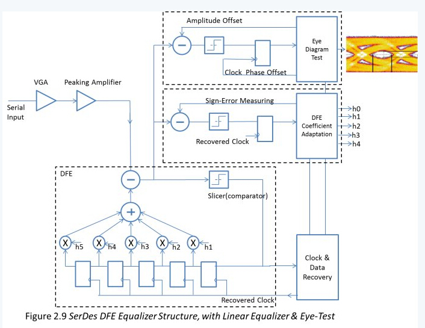
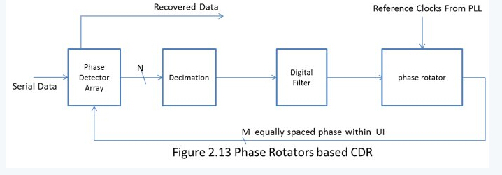

Serdes summary
Table of Contents
1 SerDes的价值
1.1 并行总线接口
在SerDes流行之前,芯片之间的互联通过系统同步或者源同步的并行接口传输数据,图1.1演示了系统和源同步并行接口。
随着接口频率的提高，在系统同步接口方式中,有几个因素限制了 有效数据窗口宽度 的继续增加。
- 时钟到达两个芯片的传播延时不相等(clock skew)
- 并行数据各个bit的传播延时不相等(data skew)
- 时钟的传播延时和数据的传播延时不一致(skew between data and clock)
虽然可以通过在目的芯片(chip #2)内用PLL补偿时钟延时差(clock skew)，但是PVT变化时，时钟延时的变化量和数据延时的变化量是不一样的。这又进一步恶化了数据窗口。
源同步接口方式中，发送侧Tx把时钟伴随数据一起发送出去, 限制了clock skew对有效数据窗口的危害。通常在发送侧芯片内部，源同步接口把时钟信号和数据信号作一样的处理，也就是让它和数据信号经过相同的路径，保持相同的延时。这样PVT变化时，时钟和数据会朝着同一个方向增大或者减小相同的量,对skew最有利。
我们来做一些合理的典型假设，假设一个32bit数据的并行总线:
- 发送端的数据skew = 50 ps —很高的要求
- pcb走线引入的skew = 50ps —很高的要求
- 时钟的周期抖动jitter = +/-50 ps —很高的要求
- 接收端触发器采样窗口 = 250 ps —Xilinx V7高端器件的IO触发器
可以大致估计出并行接口的最高时钟 = 1/(50+50+100+250) = 2.2GHz (DDR)或者1.1GHz (SDR)。
利用源同步接口，数据的有效窗口可以提高很多。通常频率都在1GHz以下。在实际应用中可以见到如SPI4.2接口的时钟可以高达DDR 700MHz x 16bits位宽。DDR Memory接口也算一种源同步接口，如DDR3在FPGA中可以做到大约800MHz的时钟。
要提高接口的传输带宽有两种方式，一种是提高时钟频率，一种是加大数据位宽。那么是不是可以无限制的增加数据的位宽呢？这就要牵涉到另外一个非常重要的问题–—同步切换噪声(SSN)。
这里不讨论SSN的原理，直接给出SSN的公式 SSN = L N di/dt。L是芯片封装电感,N是数据宽度，di/dt是电流变化的斜率。随着频率的提高，数据位款的增加，SSN成为提高传输带宽的主要瓶颈。图1.2是一个DDR3串扰的例子。图中低电平的理论值在0V,由于SSN的影响，低电平表现为震荡，震荡噪声的最大值达610mV，因此噪声余量只有1.5V/2-610mV=140mV。
因此也不可能靠无限的提高数据位宽来继续增加带宽。一种解决SSN的办法是使用差分信号替代单端信号，使用差分信号可以很好的解决SSN问题，代价是使用更多的芯片引脚。使用差分信号仍然解决不了数据skew的问题，很大位宽的差分信号再加上严格的时序限制，给并行接口带来了很大的挑战。
1.2 SerDes接口
源同步接口的时钟频率已经遇到瓶颈，由于信道的非理想(channel)特性，再继续提高频率，信号会被严重损伤，就需要采用均衡和数据时钟相位检测等技术。这也就是SerDes所采用的技术。SerDes(Serializer-Deserializer)是串行器和解串器的简称。串行器(Serializer)也称为SerDes发送端(Tx)，(Deserializer)也称为接收端Rx。Figure1.3是一个N对SerDes收发通道的互连演示,一般N小于4。
可以看到，SerDes不传送时钟信号，这也是SerDes最特别的地方，SerDes在接收端集成了CDR(Clock Data Recovery)电路，利用CDR从数据的边沿信息中抽取时钟，并找到最优的采样位置。
SerDes采用差分方式传送数据。一般会有多个通道的数据放在一个group中以共享PLL资源，每个通道仍然是相互独立工作的。
SerDes需要参考时钟(Reference Clock)，一般也是差分的形式以降低噪声。接收端Rx和发送端Tx的参考时钟可以允许几百个ppm的频差(plesio-synchronous system)，也可以是同频的时钟，但是对相位差没有要求。
作个简单的比较，一个SerDes通道(channel)使用4个引脚(Tx+/-,Rx+/-), 目前的FPGA可以做到高达28Gbps。而一个16bits的DDR3-1600的线速率为1.6Gbps*16 = 25Gbps,却需要50个引脚。此对比可以看出SerDes在传输带宽上的优势。
相比源同步接口，SerDes的主要特点包括:
- SerDes在数据线中时钟内嵌,不需要传送时钟信号。
- SerDes通过加重/均衡技术可以实现高速长距离传输，如背板。
- SerDes 使用了较少的芯片引脚
1.3 中间类型
也存在一些介于SerDes和并行接口之间的接口类型，相对源同步接口而言，这些中间类型的接口也使用串行器(Serializer)解串器(Deserializer)，同时也传送用于同步的时钟信号。这类接口如视频显示接口7:1 LVDS等。
2 SerDes结构(architecture)
SerDes的主要构成可以分为三部分，PLL模块，发送模块Tx，接收模块Rx。为了方便维护和测试，还会包括控制和状态寄存器，环回测试，PRBS测试等功能。见图2.1。
图中蓝色背景子模块为PCS层，是标准的可综合CMOS数字逻辑，可以硬逻辑实现，也可以使用FPGA软逻辑实现，相对比较容易被理解。褐色背景的子模块是PMA层，是数模混合CML/CMOS电路，是理解SerDes去别于并行接口的关键，也是本文要讨论的内容。
发送方向(Tx)信号的流向: FPGA软逻辑(fabric)送过来的并行信号，通过接口FIFO(Interface FIFO), 送给8B/10B编码器(8B/10B encoder)或扰码器(scambler)，以避免数据含有过长连零或者连1。之后送给串行器(Serializer)进行 并->串 转换。串行数据经过均衡器(equalizer)调理，有驱动器(driver)发送出去。
接收方向(Rx)信号的流向, 外部串行信号由线性均衡器(Linear Equalizer)或DFE (Decision Feedback Equalizer)结构均衡器调理，去除一部分确定性抖动(Deterministic jitter)。CDR从数据中恢复出采样时钟，经解串器变为对齐的并行信号。8B/10B解码器(8B/10B decoder)或解扰器(de-scambler)完成解码或者解扰。如果是异步时钟系统(plesio-synchronous system)，在用户FIFO之前还应该有弹性FIFO来补偿频差。
PLL负责产生SerDes各个模块所需要的时钟信号,并管理这些时钟之间的相位关系。以图中线速率10Gbps为例,参考时钟频率250MHz。Serializer/Deserializer至少需要5GHz 0相位时钟和5GHz 90度相位时钟，1GHz(10bit并行)/1.25GHz(8bit并行)时钟等。
一个SerDes通常还要具调试能力。例如伪随机码流产生和比对，各种环回测试，控制状态寄存器以及访问接口，LOS检测, 眼图测试等。
2.1 串行器解串器(Serializer/Deserializer)
串行器Serializer把并行信号转化为串行信号。Deserializer把串行信号转化为并行信号。一般地，并行信号为8 /10bit或者16/20bit宽度，串行信号为1bit宽度(也可以分阶段串行化，如8bit->4bit->2bit->equalizerà1bit以降低equalizer的工作频率)。采用扰码(scrambled)的协议如SDH/SONET, SMPTE SDI使用8/16bit的并行宽度，采用8B/10B编码的协议如PCIExpress,GbE使用10bits/20bits宽度。
一个4:1的串行器如图xxx所示。8:1或16:1的串行器采用类似的实现。实现时，为了降低均衡器的工作频率，串行器会先把并行数据变为2bits，送给均衡器equalizer滤波，最后一步再作2:1串行化，本文后面部分都按1bit串行信号解释。
一个1:4的解串器如图2.3所示，8:1或16:1的解串器采用类似的实现。实现时，为了降低均衡器(DFE based Equalizer)的工作频率，DFE工作在DDR模式下，解串器的输入是2bit或者更宽，本文后面部分都按1bit串行信号解释。
Serializer/Deserializer的实现采用双沿(DDR)的工作方式，利用面积换速度的策略，降低了电路中高频率电路的比例，从而降低了电路的噪声。
接收方向除了Deserializer之外，一般带有还有对齐功能逻辑(Aligner)。相对SerDes发送端，SerDes接收端起始工作的时刻是任意的，接收器正确接收的第一个 bit可能是发送并行数据的任意bit位置。因此需要对齐逻辑来判断从什么bit位置开始，以组成正确的并行数据。对齐逻辑通过在串行数据流中搜索特征码字(Alignment Code)来决定串并转换的起始位置。比如8B/10B编码的协议通常用K28.5(正码10’b1110000011，负码10’b0001111100)来作为对齐字。图2.4为一个对齐逻辑的演示。通过滑窗，逐bit比对，以找到对齐码(Align-Code)的位置，经过多次在相同的位置找到对齐码之后，状态机锁定位置并选择相应的位置输出对齐数据。
2.2 发送端均衡器( Tx Equalizer)
SerDes信号从发送芯片到达接收芯片所经过的路径称为信道(channel)，包括芯片封装，pcb走线，过孔，电缆，连接器等元件。从频域看，信道可以简化为一个低通滤波器(LPF)模型，如果SerDes的速率大于信道(channel)的截止频率，就会一定程度上损伤(distort)信号。均衡器的作用就是补偿信道对信号的损伤。
发送端的均衡器采用FFE(Feed forward equalizers)结构，发送端的equalizer也称作加重器(emphasis)。加重(Emphasis)分为去加重(de-emphasis)和预加重(pre-emphasis)。De-emphasis降低差分信号的摆幅(swing)。Pre-emphasis增加差分信号的摆幅。FPGA大部分使用de-emphasis的方式，加重越强，信号的平均幅度会越小。
发送侧均衡器设计为一个高通滤波器(HPF),大致为信道频响H(f)的反函数H-1(f)，FFE的目标是让到达接收端的信号为一个干净的信号。FFE的实现方式有很多，一个典型的例子如图2.5所示。
调节滤波器的系数可以改变滤波器的频响，以补偿不同的信道特性，一般可以动态配置。以10Gbps线速率为例，图2.5为DFE频率响应演示。可以看到，对于C0=0,C1=1.0,C2=-0.25的配置，5GHz处高频增益比低频区域高出4dB，从而补偿信道对高频频谱的衰减。
采样时钟的频率限制了这种FFE最高只能补偿到Fs/2(例子中Fs/2=5GHz)。根据采样定理，串行数据里的信息都包含在5GHz以内，从这个角度看也就足够了。如果要补偿Fs/2以上的频率，就要求FFE高于Fs的工作时钟,或者连续时间域滤波器(Continuous Time FFE)。
图2.7为DFE时域滤波效果的演示，以10Gbps线速率为例，一个UI=0.1 nS=100ps。演示的串行数据码流为二进制[00000000100001111011110000]。
2.3 接收端均衡器( Rx Equalizer)
2.3.1 线形均衡器(Linear Equalizer)
www.blog.sina.com.cn/fpgatalk
接收端均衡器的目标和发送均衡器是一致的。对于低速(<5Gbps)SerDes，通常采用连续时间域，线性均衡器实现如尖峰放大器(peaking amplifier), 均衡器对高频分量的增益大于对低频分量的增益。图2.8为一个线性均衡器的频域特性。通常工厂会对均衡特性封装为数种级别，可以动态设置，以适应不同的信道特性，如High/Med/Low等。
2.3.2 DFE均衡器(Decision Feedback Equalizer)
对于高速(>5Gbps)SerDes，由于信号的抖动(如ISI相关的确定性抖动)可能会超过或接近一个符号间隔(UI, Unit Interval), 单单使用线性均衡器不再适用。线性均衡器对噪声和信号一起放大，并没有改善SNR或者说BER。对于高速SerDes，采用一种称作DFE (Decision Feedback Equalizer)的非线性均衡器。DFE通过跟踪过去多个UI的数据(history bits)来预测当前bit的采样门限。DFE只对信号放大，不对噪声放大，可以有效改善SNR。
图2.9演示了一个典型的5阶DFE。接收的串行数据由比较器(slicer)来判决0或者1，然后数据流由一个滤波器来预测码间干扰(ISI)，再从输入的原始信号中减掉码间干扰(ISI)，从而的到一个干净的信号。为了让DFE均衡器的电路工作在电路线形范围内，串行信号先经过VGA自动控制进入DFE的信号幅度。

为了理解DFE的工作原理，先来看一个10Gbps背板的脉冲响应，这个背板模型是matlab给出的一个基于实测的模型，具有典型特性。
图2.10中,一横格代表一个UI的时间。可以看出，一个UI( 0.1nS = 1/10GHz )的脉冲信号，通过背板后，泄漏到前后多个相邻的UI里面，从而对其他UI的数据产生干扰。采样点后面的干扰叫做post-cursor干扰，采样点前面的叫做pre-cursor干扰。DFE的第一个系数 h1(此例中0.175)矫正第一个post-cursor, 第二个系数 h2(此例中0.075)矫正第二个post-cursor。DFE的阶数越多，能够校正的post-cursor也越多。
用上述的背板传输一个11011的码流，由于post-cursor和pre-cursor的泄漏，如果没有均衡，将会导致’0’不能识别，见图2.11。假定有一个2阶的DFE, 那么‘0’bit处的幅度应该减去第一个’1’bit的h2,第二个’1’bit的h1, 得到0.35-0.075-0.175 =0.1, 足够被识别为0。
可见，DFE计算历史bits的post-cursor干扰，在当前bit中把干扰减去，从而得到干净的信号。由于DFE只能能够校正post-cursor ISI, 所以DFE前面一般会带有LE。只要DFE的系数接近信道(channel)的脉冲相应，就可以到的比较理想的结果。但是信道是一个时变的媒介，比如温度电压工艺的慢变化等因素会改变信道channel的特性。因此DFE的系数需要自适应算法，自动扑获和跟随信道的变化。DFE系数自适应算法非常学术，每个厂商的算法都是保密的，不对外公布。对于NRZ码，典型的算法准则是基于sign-error驱动的算法。Sign-error是均衡后信号的幅度和期望值的误差，算法以sign-error均方差最小为优化目标，逐次优化h1/h2/h3…。因为sign-error和采样位置是耦合在一起相互影响，因此也可以sign-error和眼图宽度两个准则为目标进行DFE系数的预测。也因此，采用DFE结构的SerDes通常都会带有内嵌眼图测试电路，如图2.9所示。眼图测试电路通过垂直方向上平移信号的幅度，水平方向上平移采样位置，计算每一个平移位置上的误码率BER,从而得到每一个偏移位置与误码率关系的”眼图”，见图2.12。
2.4 时钟数据恢复(CDR)
CDR的目标是找到最佳的采样时刻,这需要数据有丰富的跳变。CDR有一个指标叫做 最长连0或连1长度 容忍(Max Run Length或者Consecutive Identical Digits)能力。如果数据长时间没有跳变，CDR就无法得到精确的训练，CDR采样时刻就会漂移，可能采到比真实数据更多的1或者0。而且当数据重新恢复跳变的时，有可能出现错误的采样。比如有的CDR采用PLL实现，如果数据长时间停止跳变，PLL的输出频率就会漂移。实际上，SerDes上传输的数据要么利用加扰,要么利用编码的方法来保证Max Run Length在一定的范围内。
- 8B/10B编码的方法可以保证Max Run Length不超过5个UI。
- 64B/66B编码的方法可以保证Max Run Length不超过66个UI
- SONET/SDH加扰得方法可以保证Max Run Length不超过80个UI(BER<10^-12)
在点到点的连接中，大部分SerDes协议采用连续模式(continuous-mode)，线路上数据流是持续而没有中断的。在点到多点的连接中，往往采用突发模式(burst-mode)如PON。很显然Burst-Mode对SerDes锁定时间有苛刻的要求。
Continuous-Mode的协议如SONET/SDH则要求容忍较长的连0, 而且对CDR的抖动传输性能也有严格的要求(因为loop timing)。
如果收(Rx)发(Tx)是异步模式(asynchronous mode),或者频谱扩展(SSC)应用中，则要求CDR有较宽的相位跟踪范围以跟踪Rx/Tx频率差。
根据应用场景的不同需求，CDR的实现也有非常多种架构。FPGA SerDes常常采用的基于数字PLL的CDR，和基于相位插值器的CDR。这两种CDR在环路中采用数字滤波器，相对模拟charge pump加模拟滤波器的结构更节省面积。

图2.13是基于相位插值器的CDR。鉴相器阵列对输入的串行数据与M个等相位间隔的时钟在多个UI的跨度上进行相位比较，得到多个UI跨度上的相位误差信号。相位误差信号的频率很高，宽度也很宽，经过抽取器降速并平滑后，送给数字滤波器。数字滤波器的性能会影响环路的带宽，稳定性，反应速度等。经数字滤波器平滑后的误差信号送给相位插值器(phase rotators)修正时钟相位。最终环路锁定时，理论上相位误差为零，90度偏移的时钟作为恢复时钟采样串行输入。
基于DPLL的CDR, 分为两个环路，对数据锁相的环路(phase tracking loop)和图2.13的CDR工作原理类似。鉴相器阵列对输入的串行数据与M个等相位间隔的时钟进行相位比较(也可能是在多个UI的跨度上)，得到相位误差信号。相位误差信号送给数字滤波器。数字滤波器的性能会影响环路的带宽，稳定性，反应速度等。经数字滤波器平滑后的误差信号送给VCO修正时钟相位。最终环路锁定时，理论上相位误差为零，90度偏移的时钟作为恢复时钟采样串行输入。
基于DPLL的CDR多了一个频率跟踪环路(Frequency Tracking Loop)。这是为了减小CDR的锁定时间，减少对环路滤波器的设计约束。只有当 频率跟踪环路 锁定后，才会切换到数据 相位跟踪环路。相位跟踪环路失锁时，再自动切换到频率跟踪环路。N倍参考时钟(Reference Clock)频率 和 线路速率接近相等，因此两个环路的VCO稳态控制电压是接近相等的。借助 频率跟踪环路，减小了 相位跟踪环路 的捕获时间。
相位跟踪环路锁定时，频率跟踪环路不会影响相位环路。因此SerDes接收侧对参考时钟的抖动没有很高的要求。
基于相位插值器的CDR的参考时钟可以是收发公用的PLL，也可以是每个通道独立的PLL。这种结构的参考时钟抖动会直接影响恢复时钟的抖动以及接收误码率。
- 鉴相器(PD)
鉴相器用来比较相位误差，相位误差以UP或者DN的信号表示, UP/DN持续的时间正比于相位误差。一个bang-bang结构鉴相器的例子如图2.15。例子中只用了四个相位的恢复时钟作为例子。
/2021-08-10_10-40-39_07230552445.jpeg)
- 抽取器和滤波器
抽取器是为了让滤波器在较低的频率下工作。抽取的步长，平滑的方法都会影响环路的性能。数字滤波器有比例分支(Proportion)和积分分支(Integral)构成，分别跟踪相位误差和频率误差。另外数字滤波器的处理延时也不能太大，如果处理延时过大，就会导致环路不能跟踪相位和频率的快速变化，导致误码。
CDR的结构不限于以上两种，还有其他很多变种。基本上都是一个锁相环路。环路的跟随性能,稳定性(STABILITY)，带宽(bandwidth)/增益(gain)性能分析是一个非常学术的问题，用小信号线形模型分析,有非常多的书籍和资料解释了环路的量化性能。CDR环路有一些的特点总结如下:
- 环路带宽
a. 频率低于环路带宽的相位抖动会透过CDR转移到恢复时钟上。换句话说，频率低于环路带宽的抖动可以被CDR跟踪，不会引起误码。高频的抖动分量根据抖动幅度的大小，可能会引起误码。
b. 环路带宽越大，锁定时间越短，恢复时钟的抖动也越大。反之则锁定时间越长，恢复时钟的抖动也越小。作为CDR，我们希望环路带宽大一点，这样可以有更大的抖动容忍能力，但是对于loop timing的应用如SONET/SDH对恢复时钟的抖动有限制，又不能太大。
c. 开关电源的开关频率一般小于环路带宽，可以被CDR跟踪。但是，一方面开关电源耦合到VCO(Digital to Multi-Phase Convertor)上的噪声不能被环路跟踪，低成本Ring VCO尤其对电源噪声敏感。另一方面开关电源的谐波可能超出环路带宽。
一些协议提供了CDR增益模板，如SDH/SONET。兼容这些协议需要计算输入和输出的抖动预算。
2.5 公用锁相环(PLL)
SerDes需要一个工作在数据波特率上的内部时钟，或者1/2数据波特率的内部时钟，工作在DDR模式。片外提供给SerDes的参考时钟频率远远低于数据波特率，PLL用来倍频产生内部高频时钟。FPGA的SerDes PLL一般有8x,16x,10x,20x,40x模式，以支持常用的SerDes接口协议。比如PCIExpress工作在5Gbps, 在40x模式下需要提供125MHz的片外参考时钟，20x模式下需要提供250MHz的片外参考时钟。
一个三阶PLL电路如图2.17，输入信号的相位和VCO反馈信号的相位由鉴相器比较，相位误差有charge pump转化为电压或电流信号，经过Loop Filter平滑后产生控制电压，修正VCO的相位，最终使相位误差趋于零。
PLL的工作过程分为入锁过程和跟踪过程。在入锁过程，环路的模型可以用一个非线性微分方程表示，可以评估捕获时间，捕获带宽等指标。入锁后，在小信号范围内，PLL的模型是一个常系数线性方程，可以在拉普拉斯变换域研究PLL的带宽，增益，稳定性等性能, 图2.18是小信号数学模型。
PLL以传输函数极点(分母的根)个数命名环路的阶数。VCO对相位有积分作用(Kvco/s)，因此不带滤波器的环路称为一阶环。带一阶滤波器的环路称为二阶环。一阶环和二阶环是无条件的稳定系统。然而高阶环路有更多的极点和零点可以独立的调整带款，增益，稳定性，捕获带，捕捉时间等性能。
PLL的频域传输函数特性主要有环路滤波器F(s)|s=jw决定, 一个通用的PLL频域传输曲线如图2.19所示。有两个重要特征，环路带款和jitter peaking。过大的peaking会放大jitter, 大的阻尼系数(damping factor)可以限制peaking, 但是会增加环路的如锁时间, 影响滚降的速度和固有频率(natural frequency)。
- 当环路锁定后，固定相位差:
Kdc为环路的直流开环增益，Δω为VCO中心频率和受控频率的差。对于charge pump + passive filter结构的PLL相位误差为零。
- 当环路锁定后，只有固定相位差，两个输入信号频率相等。
fr/M = fo/N - 对于输入端的噪声，环路是一个低通滤波器，可以抑制高于环路截止频率的噪声或干扰。作为SerDes的PLL, 希望带宽的小一些，以抑制参考时钟上的干扰和噪声。
对于VCO噪声，环路是一个高通滤波器的作用。只有低于环路截止频率的VCO噪声得到了抑制。 过量的VCO高频噪声会恶化时钟的抖动。低速SerDes(<5Gbps)的VCO出于成本考虑采用Ring结构的VCO，噪声大且对电源敏感。高速SerDes的VCO采用噪声小较小的LC结构VCO。
3 抖动和信号集成( Jitter, SI )
抖动是指信号的跳边时刻偏离其理想(ideal)或者预定(expected)时刻的现象。噪声，非理想的信道，非理想的电路都是产生抖动的原因。
3.1 时钟的抖动(clock jitter)
对于时钟信号，根据应用场景的不同，对抖动的定义也不一样。比如数字逻辑计算时序余量的时候，关心的是周期抖动。而时钟设计人员更喜欢相位抖动，因为可以利用频谱评估相位抖动，并可以用频谱来评估具体的干扰对总相位抖动的贡献。
参考图3.1,介绍一下几种抖动的定义。
- 相位抖动(phase jitter)
Jphase(n)= tn – n*T。理想时钟的每个周期T都是相等的，没有抖动。真实时钟的跳边沿相对于理想时钟的偏离称作相位抖动。
- 周期抖动(period jitter)
Jperiod(n)= (tn- tn-1)– T。周期抖动是实际时钟的周期相对于理想周期的偏离(deviation)。显然Jperiod(n) = Jphase(n) - Jphase(n-1)。 - Cycle-to-Cycle jitter
Jcycle(n) = (tn- tn-1) - (tn-1- tn-2)。前后相邻的两个周期的偏差是Cycle-Cycle抖动。显然Jcycle(n)= Jperiod(n) – Jperiod(n-1)。
假设相位抖动的最大值为 +/-Jp, 而且抖动的频率fjitter = 0.5fclock = 0.5/T，也就是，
tn-2时刻的相位抖动为最大值+Jp ，tn-1时刻的相位抖动为最小值-Jp
tn时刻的相位抖动为最大值+Jp ， tn+1时刻的相位抖动为最小值-Jp
那么，周期抖动最大值 Jperiod=+/- 2* Jp
那么，Cycle-Cycle抖动最大值 Jcycle =+/- 4* Jp
3.2 数据的抖动(data jitter)
在高速SerDes领域每个人都在说抖动，因为抖动直接和误码率(BER)相关。
SerDes发送端的一个重要要求是抖动(jitter generation)-—针对特定的码型(pattern)，速率和负载情况下，发送端所生成的抖动。
信号经过信道(channel)到达接收端时，又会进一步放大抖动，不同的码型(pattern)包含的频率成分也不一样，信道对不同频率成分的传输延时也不一样(非线性相位), 产生和数据pattern相关的确定性抖动。阻抗不连续产生的反射，相邻信号的串扰和噪声都会引起数据抖动。
SerDes接收端的一个重要指标是抖动容忍能力(Jitter Tolerance)-—针对特定的码型和误码率要求(BER<10-12)，SerDes接收端能够容忍的抖动大小。对抖动评估时，会使用眼图(eye-diagram),浴缸曲线(bath curve),抖动分布柱状图(PDF),抖动频谱(jitter spectrum)等图形手段。
有一点需要说明，在谈论高速SerDes的数据抖动时(Tj,Rj,Dj etc.)，是不包括低频率抖动的。这是因为低频率的抖动被认为是一种wander，可以被CDR跟踪，不会引起误码。在用示波器(SDA)测量数据抖动的时候，可以设置示波器内嵌的CDR环路带宽，示波器测量的抖动数据已经滤掉了低频抖动。
根据抖动产生的原因和概率密度函数，常常将抖动分为几类。对抖动进行分类的意义在于某些类型的抖动可以被校正，而其他类型的不能被校正。经典的，总抖动Tj(Total Jitter)被分类为确定性抖动Dj (deterministic jitter)和随机抖动Rj (random jitter)。抖动以UI或者ps为单位，可以是均方根值，或者峰峰值。
3.2.1 Dj
Dj被进一步细分,
- DCD(Duty cycle distortion)
占空比失真抖动。差分信号的正端负端的偏置电压不一致，或者上升沿和下降沿时间不一致会导致占空比失真。因为DCD和数据pattern相关，是可以被校正的抖动。
- DDJ(Data dependent jitter)
数据码型相关的抖动，也称 码间干扰ISI(intersymbol interference)。DDJ是由于不理想的信道导致。是可以被均衡器校正的抖动。
- Pj(Periodic jitter)
周期性抖动。Pj由电路上周期性干扰源导致。比如开关电源的开关频率，时钟信号的串扰等。虽然电源的开关频率一般在CDR的跟踪范围内，但是低次谐波成分可能会落在环路带宽外，或者jitter peaking区域, 更重要的是电源谐波对CDR内VCO的干扰是不能被抑制和跟踪的，所以对于基于Ring VCO的CDR一定要尽可能的使用LDO供电。Pj不能被均衡器校正.
- BUJ(Bounded uncorrelated jitter)
BUJ由非时钟的干扰源引起。如果干扰源aggressor和victim是异步的，抖动的概率分布为有界的高斯分布，此时也称作CBGJ(Correlated Bounded Gaussian Jitter)。BUJ/CBGJ不能被校正。
3.2.2 Rj
Rj有半导体本身的噪声引起，一个重要特征就是Rj的概率密度函数是高斯分布的，没有边界，且和数据pattern无关。只有在一定误码率约束下，才可以被认为是有界的。
3.2.3 Tj
数学意义上，抖动的概率分布函数可以近视为高斯分布和双底拉克分布的卷积。
对高斯分布有贡献的抖动为：
- Rj为高斯分布
- 大量Pj叠加的效果也为高斯分布
- 部分BUJ也为高斯分布
对双底拉克分布有贡献的抖动为：
- DCD被近视为双底拉克概率分布
高斯分布和双底拉克分布的卷积:
其中，W被认为是确定性抖动的峰峰值，δ是高斯分布的均方差。见图3.2, 可以看到，随着确定性抖动W的增加，概率密度分布曲线的顶部出现了双峰。一般来讲顶部曲线反映了确定性抖动的大小程度。
把一个UI内的两个跳变沿处(0 UI处和1UI处)的概率分布函数放在一张图中，就是抖动的浴缸曲线(bathtub curve)。因为对数的宽动态范围，Y坐标以对数显示。图3.3为确定性抖动W=0.05UI, 高斯抖动方差0.05UI的浴缸曲线。
浴缸曲线还会标出对应的误码率BER坐标,比如图中BER=10^-12的峰峰值抖动为Tj(p-p)=0.373*2 = 0.746 UI。曲线下面的面积占总面积的比率就是误码率。比如图中，
/2021-08-10_11-18-36_07231607770 (1).jpeg)
浴缸曲线的顶部主要为确定性抖动Dj的贡献，越靠近底部，高斯抖动的贡献越大，并以高斯曲线的斜率衰减，也因此常利用高斯分布的特性进行估算。下表为高斯分布
和均方差关系。
/2021-08-10_11-20-12_Picture 1.png)
在规定的BER内，利用该表可以快速估算均方差值和峰峰值之间的关系。比如高斯抖动的均方根0.05UI，误码率要求为10^-12 BER，查表可知Q=7，那么高斯抖动的峰峰值要求是0.05UI*7*2 = 0.7UI。
如前所述，W=0.05UI,Rj=0.05UI计算出的总抖动Tj=0.746UI；
利用高斯特性估算的高斯抖动为0.7UI。
如果按Tj = Rj(0.7UI)+Dj(0.05UI)计算得到0.75U，基本是一致的,差异是因为画图程序有量化误差。
4 信号集成(SI)及仿真
4.1 信道channel
SerDes信道关注的频率范围是0Hz到奈奎斯特频率，也就是2倍的信号基频。信号的基频是信号线速率的一半，也就是说信号的奈奎斯特频率就是线速率。信道对信号的损伤包括插入损失(insertion loss),反射 (reflection),串扰(crosstalk)等。这些损伤可以用S-parameter信道模型来表达。S-parameter可以有矢量网络分析仪测量(Vector Network Analyzer)得到。信道不是一个纯阻性网络，还包括容性和感性。这样对不同频率里成分的时延也不一样，从而产生和data pattern相关的抖动。
信道上的每一个不连续阻抗点都会产生反射，根据反位置的不同，反射信号会以不同的相位叠加在原始信号上，增加或者减小信号的幅度。
SerDes信号为差分形式，对共模干扰有较强的抑制。如果在+/-端上的干扰有差异，就会引入串扰。通常外部PCB可以保证SerDes数据和干扰源保持足够的距离，但是芯片内部由于考虑到经济性，很难保证SerDes信号和干扰源足够的隔离距离，尤其是一个通道自己的发送信号干扰自己的接收信号。
4.2 芯片封装Package
封装package也是信道的一部分。芯片外部的信道可以通过VNA测量的到，而封装的S-parameter通常有芯片制造商提供，仿真时可以把两者级联起来。封装package由于距离较短，insertion loss通常不是主要问题，主要考虑的是阻抗匹配问题。
4.3 SI仿真
信号集成性(SI)仿真可以通过把SerDes发送端SPICE模型，封装和信道的S-parameter模型，接收端SPICE模型级联起来搭建仿真平台，利用仿真工具对不同的激励在不同的测试条件作电路仿真。通过测量SerDes接收端的眼图来评估是否满足设计需求。也可以通过实测接收端眼图，检验是否满足接收端的眼图模板，或者协议规定的眼图模板。图4.1为一个实测的3.125Gbps信号的眼图及模板，同时也包含了浴缸曲线和统计图。
对于高速SerDes(>5Gbps)，这种传统的电路仿真方法已经不能满足设计的需求。首先，过量的码间干扰ISI导致接收端眼图完全闭合，但是通过芯片内的DFE均衡后，眼图可能是很好的。其次，电路仿真(SPICE)的速度非常慢，即使是有办法把DFE均衡加入仿真，由于DFE仿真需要足够长时间的bits来训练，此时，电路仿真的仿真时间是不可接受的。
对于高速SerDes的仿真需要借助统计分析 (statistical analysis) 的方法。统计分析的方法把发送端-信道-接收端的连接近视为线性系统，计算系统脉冲响应h(t)，加入噪声源来模拟抖动，然后用激励对脉冲响应进行卷积，得到接收端的信号，这种方法可以把厂家私有的FFE,DFE自适应算法加入仿真。
统计分析 (statistical analysis)方法不能仿真电路的非线性和时变特性，所以高速SerDes往往要两者结合起来仿真SI。更多关于统计分析 (statistical analysis)方法可以参考。
5 眼图和浴盆曲线
眼图和浴盆曲线/2021-08-10_14-19-20_eye_vs_bathtub.pdf
- 眼图定性的表示信号质量，是通过示波器采样的叠加
- 浴盆曲线是sweep一个UI，在UI里每个点测量BER，通常来说UI边界由于ISI的影响BER比UI中心大，看起来像浴盆的横截面，浴盆曲线比眼图更为精确
6 相关
spreadspectrumclock扩频时钟
将上升沿下降沿的中心点附近提高高频分量，使其更为垂直，同时将离中心相对远的距离的高频分量减少，使其变的平缓，这是均衡EMI和jitter的一种折中方案
prepost
pre是在上升下降沿之前将幅值拉大
post是之后拉大幅值一段时间
同时加大prepost相当于加幅值
serdes差分信号
线路中间有电容差分信号中间连接电阻
加电容的原因是工艺，不同厂家的输出电压不同，需要通过➕电容来隔离不同电压
Accoupling阻直通交
如serdes图，如果供电电压一直不变，电容被不断充电，最终导致电压集中在电容，差分信号电阻上电压为0，相当于长时间输入1，最终接收方收不到任何信号，这就是为什么需要扰码和8b10b的原因
`
10G
shared-mediumCSMA/CDoperation has not been carried over from the previous generations Ethernet standards[1]so half-duplex operation andrepeater hubsdo not exist in 10GbE.
XAUI - MAC和PHY的PCS子层之间 10GBASE-X module间
XFI来源于XFP光模块标准的一部分，指的是连接ASIC芯片和XFP光模块的电气接口,因此XFP模块尺寸比较大，功耗也比较大，这个对于需要多端口高密度的系统，比如数通交换机会是一个问题。为了解决这两个问题，2006年左右，SFP+光模块标准出来了，其内部没有CDR电路，相对于XFP模块，SFP+模块尺寸和功耗都变小了。对应SFP+的电气接口叫做SFI
XSBI是用于实现XFI的一个方式
现在时钟信号都是差分的么?
有差分的，也有单端的
都有
但是一般现在普遍都是差分的
因为差分的抗干扰能力强
翻转速度快
单端的没有这些优势，就是便宜
就像pcie取代pci一样
为啥差分就翻转速度快?
差分门，工作在放大区
小信号，摆动速度快
曾经的单端信号，都是工作在，饱和区和截至区，由饱和区到截至区，需要时间，由截至区到饱和区，也需要时间
所以单端信号的幅值会高一点?
单端信号就是0V到3.3V
差分信号都是1.2V的上下摆动
1.2V+0.4V或者减0.4V
或者在2V的上下摆动
CMLLVPECL
三极管
0到0.7截止区0.7到2.3放大区2.3到3.3vcc饱和区
像i2c等低速信号工作在截止区和饱和区
对于serdes等高速信号，出于速度要求，应工作在放大区
VCO:频率是输入信号电压的函数的振荡器
由于直接将8bit数据编码成10bit来传输在实现上将占用芯片的大片物理面积，并且严重影响了数据的传输速率，所以目前大都采用将一串8位二进制数分为低5位和高3位，然后对低5位进行5B/6B编码，高3位进行3B/4B编码，最后再将6位和4位合在一起的编码方式。这样做不进减少了芯片占用面积，而且简化了编码，提高了数据的传输速率。
(1）当码字中‘1’比‘0’多, 或者4B 码为1100,或者6B 码为111000时, 该码字被定义为正极性码,这个时候RD取正; （2）当码字中‘1’比‘0’少, 或者4B 码为0011,或者6B 码为000111时, 该码字被定义为负极性码, 这个时候RD取负;
8b/10b实现内嵌时钟，DC平衡。
加扰是为了解决EMI的问题；当数据重复传输时，能量就会集中在某一频率上，产生EMI噪声；数据经过加扰后，能把集中的能量分散开，几乎变成白噪声。
//PRBS7
int main(int argc, char *argv[argc])
{
int a[7] = {1,1,1,1,1,1,1};
int output[127] = {0};
int temp;
int i, j;
for (i = 0; i < 127; ++i) {
output[i] = a[6];
temp = a[5];
for (j = 6; 0 < j; --j) {
a[j] = a[j - 1];
}
a[0] = output[i] ^ temp;
}
for (i = 0; i < 127; ++i) {
printf(" %d ", output[i]);
}
printf("\n");
return 0;
}
Higher-order polynomials can generate longer run lengths without transitions, and therefore the data patterns contain more low frequency content. This stresses the CDR in the HSS receiver more than a data pattern which has a higher transition density.Unmodified PRBS patterns mathematically have slightly higher probability of generating a 1 bit than a 0 bit. Over time this accumulates a DC charge on the capacitor of an AC coupled system. Correspondingly, an inverted PRBS pattern has a slightly higher probability of generating a 0 bit than a 1 bit. Providing both patterns allows the user to decide which pattern is appropriate
漏电测试
the HSS EX10
transmitter described in Chap. 2 would be characterized with the PRBS-7 and
PRBS-10 patterns, as well as the “0101” clock pattern. Clock patterns do not
have pattern dependent jitter, and therefore this pattern is useful for determining
the random jitter (RJ); the PRBS patterns are used to characterize totaljitter (TJ). Deterministic jitter (DJ) can be determined mathematically once TJand RJ are known.
S参数，也就是散射参数。是微波传输中的一个重要参数。S12为反向传输系数，也就是隔离。S21为正向传输系数，也就是增益。S11为输入反射系数，也就是输入回波损耗，S22为输出反射系数，也就是输出回波损耗。
连续型随机变量的概率密度函数（在不至于混淆时可以简称为密度函数）是一个描述这个随机变量的输出值，在某个确定的取值点附近的可能性的函数。
能完整描述一个实数随机变量X的概率分布，是概率密度函数的积分。对于所有实数x ，CDF（cumulative distribution function），与概率密度函数probability density function（小写pdf）相对
Q因子 HigherQindicates a lower rate of energy loss relative to the stored energy of the resonator; the oscillations die out more slowly.
狄拉克δ函数是一个广义函数，在物理学中常用其表示质点、点电荷等理想模型的密度分布，该函数在除了零以外的点取值都等于零，而其在整个定义域上的积分等于1。
单位脉冲响应是指一个无穷大的瞬时冲激，并且由于其在时间轴上的积分为1，而t又趋向于零，所以单位脉冲响应的大小应该是无穷大，但是要知道的是，无穷大量也有大小比较，所以单位脉冲响应可以用一个系数对之进行量度。在双端口网络的输入端施加一狄拉克增量函数表达的单位冲激时产生的该网络的时间响应。1表达单位冲激的增量函数可看成是一个当时间间隔趋近于零时的函数极限，该函数除在围绕原点的很短时间间隔内有正值，且其积压分恒等于１之外，其余各点均为零值。2单位冲激可看成是单位阶跃的时间导数。3单位冲激可看成是非变线性双端口网络的单位阶跃响应的时间导数.
stuck—at是一种门级故障模型，反映某一节点逻辑恒为1（stuck—at 1故障）或 0（stuck—at 0故障）这种故障
transition fault是一种用于测试门延时故障的模型
边界扫描技术的基本思想是在靠近芯片的输入输出管脚上增加一个移位寄存器单元。因为这些移位寄存器单元都分布在芯片的边界上（周围），所以被称为边界扫描寄存器（Boundary-Scan Register Cell）。当芯片处于调试状态的时候，这些边界扫描寄存器可以将芯片和外围的输入输出隔离开来。通过这些边界扫描寄存器单元，可以实现对芯片输入输出信号的观察和控制。对于芯片的输入管脚，可以通过与之相连的边界扫描寄存器单元把信号（数据）加载倒该管脚中去；对于芯片的输出管脚，也可以通过与之相连的边界扫描寄存器“捕获”（CAPTURE）该管脚上的输出信号。在正常的运行状态下，这些边界扫描寄存器对芯片来说是透明的，所以正常的运行不会受到任何影响。这样，边界扫描寄存器提供了一个便捷的方式用以观测和控制所需要调试的芯片。另外，芯片输入输出管脚上的边界扫描（移位）寄存器单元可以相互连接起来，在芯片的周围形成一个边界扫描链（Boundary-Scan Chain）。一般的芯片都会提供几条独立的边界扫描链，用来实现完整的测试功能。边界扫描链可以串行的输入和输出，通过相应的时钟信号和控制信号，就可以方便的观察和控制处在调试状态下的芯片。
利用边界扫描链可以实现对芯片的输入输出进行观察和控制。下一个问题是：如何来管理和使用这些边界扫描链？对边界扫描链的控制主要是通过TAP （Test Access Port）Controller来完成的。
wannder就是飘移, AC耦合,如果0，1 的个数不一样， 就会wander, 电源的波动， 也会致使wander
Wander is the peak to peak variation in the phase of a signal (clock or data) after filtering the phase with a single-pole low-pass filter with the –3db point at the wander corner frequency in Fig. 4.3 -> 电源的波形引起的wander
peak to peak variation -> 幅度不一致,比如高速信号是在2V的上下摆动400mv这个2V会波动，400mv也会波动,也许就波动到了380mv
CDR可以清除掉一些低频的抖动, 但是TX那边的规律抖动你无法确定, 所以RX就要跟随上TX的抖动， 这样恢复出来的时钟， 才跟收到的数据对得上
clock buffer -> 就是clock不够用了, 直接distrubute, 就加buffer,一个clock进去，多个clock出来,这种东西就叫clockbuffer
hello，问个dfe的问题，话说信号dfe算法不是根据前面的bit的反馈调整dfe的值的么，为啥dfe的值是固定不变的 ->系数采取类似lms算法，除非数据码型有突变，不会变化很大,偶尔有调整
7 IPG(IFG),PPM
1.什么是IFG？（What）
IFG(Interframe Gap),帧间距，以太网相邻两帧之间的时间断；以太网发送方式是一个帧一个帧发送的，帧与帧之间需要间隙，即帧间距IFG也可称其为IPG (Interpacket Gap)。IFG指的是一段时间，不是距离，单位通常用微秒（μs）或纳秒（ns）。
2.为什么需要IFG？（Why）
网络设备和组件在接收一个帧之后，需要一段短暂的时间来恢复并为接收下一帧做准备。
3.IFG的大小为多少？（Importance）
IFG的最小值是96 bittime，即在媒介中发送96位原始数据所需要的时间，在不同媒介中IFG的最小值是不一样的